机器学习 by 李宏毅(10-2)
Explainable Machine Learning
Machine 得出分类之后，给出分类的理由
Why we need Explainable ML？
- Machine：Correct answers != Intelligence
- Loan issuers are required by law to explain their models，银行可以通过 model 判断是否贷款给某人，法律要求有可解释
- ML应用医疗诊断，给出诊断结果需要模型解释
- ML 应用在法律判案上
- ML应用在自驾车，需要给出各种操作的原因
- ML 根据解释升级model
### Interpretable VS Powerful
- 一些 Model 本身就具有可解释性
- 比如，linear model （根据 weights 大小就知道 feature 的重要程度）
- 但是模型能力不够强大
- Deep networks 很难解释，更像是 Black Box，但是远比linear model 更强大，相应的解释性比linear model 更差
- 所以使得 Deep Model 可解释很有必要
Interpretable：事物本身可解释，是白箱
explainable：使得黑箱具有可解释性
some models interpretable and powerful at the same time
For example, Decision tree，powerful than linear model and Interpretable than deep model
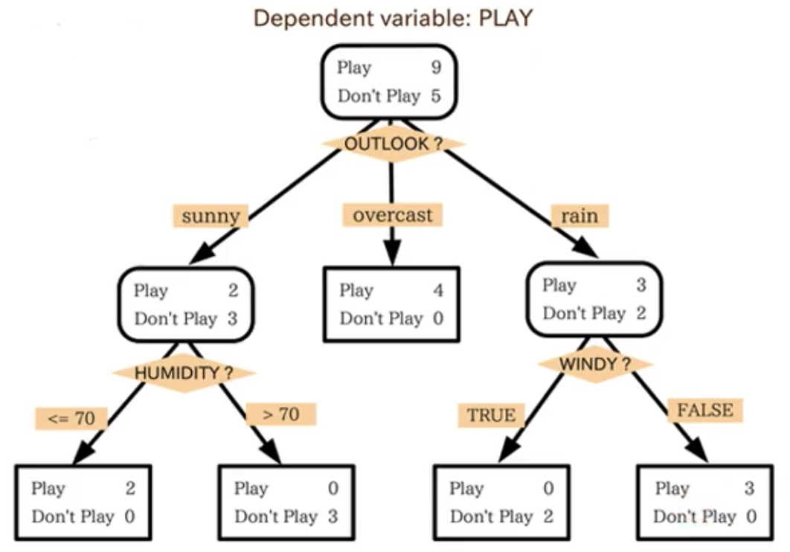
decision tree 也可以十分复杂，其可解释性随之降低
Goal of Explainable ML
我们没有必要完全知道整个model是如何工作的，人脑本身就是一个 Black Box，但是我们可以相信人脑做出的决策，因为理由很重要。所以一个好的 Explaination = Make people comfortable 。
Explainable ML 就是给出一个理由
- Local Explaination，根据某一个data回答问题。比如 Cat Classifier 需要回答 why do you think this image is a cat？
- Global Explanation，不针对任何一个特定的data，而是对于model本身是如何认为的。比如 Cat Classifier 需要回答 What does a cat look like？
Local Explanation：Explain the Decision
Question：Why do you think an image is a cat? Or Which component is critical for making decision?
具体而言，假设输入是 Object x，x 由多个 component 组成 （x1，x2，···，xn），把每个component进行修改或者删除，如果这个操作导致decision产生巨大的变化，说明component 重要性很高。
在图像辨识上，我们可以mask图片的部分区域，看 Network 产生的结果会发生什么变化，图中给出mask的区域在图片的各个位置时，Network输出正确的几率大小，红色代表几率高，蓝色代表几率低。
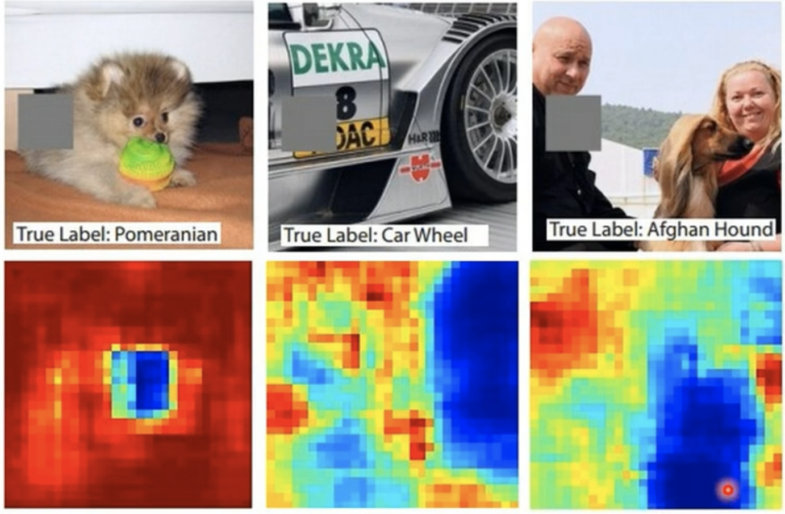
Saliency Map
或者，将图像x的pixel做一个 △x 的变化，那么loss 也会有一个 △e 的变化，可以用 △e/△x 代表 pixel 的重要性，也就是 loss 对 某个pixel 的导数。计算所有 pixel 得到一个图称为 Saliency Map, 白色代表数值越大，pixel 越重要。
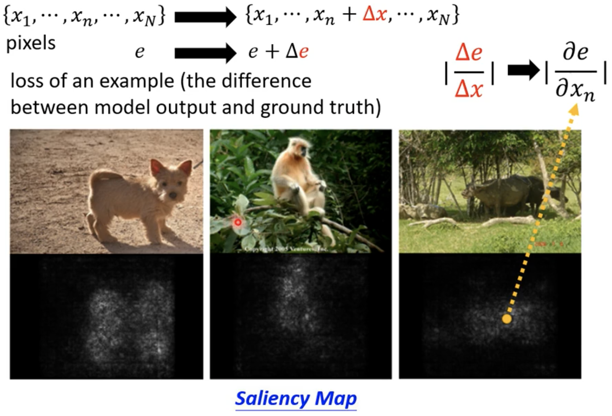
- SmoothGrad：让Saliency map更易懂一些
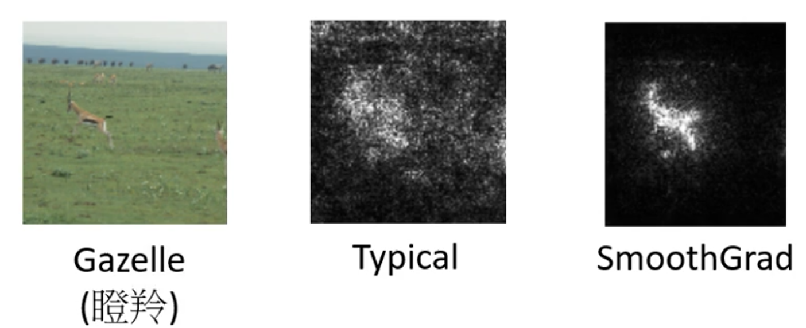
如图，显然经过SmoothGrad处理之后的Saliency Map 效果会更好。SmoothGrad，在 Input image 加上各种 Noise，绘制对应不同的 Saliency Map，将多个 Saliency Map 平均后就得到 SmoothGrad
Limitation：Gradient Saturation
Gradient cannot always reflect importance.
比如某个生物的鼻子长度，越长其是大象的可能性越大，但是长到一定程度，可能性就不会增加了。此时的 Gradient=0，但不能说长度对于决策来说不重要。所以单靠Gradient没办法表示一个component的重要性。
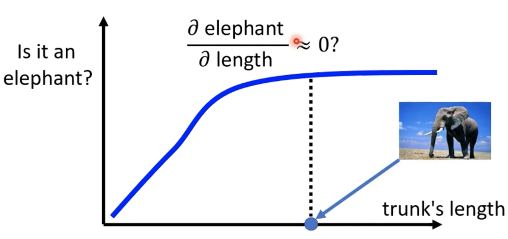
所以有另一种方法---积分梯度法 (Integrated Gradient)，解决传统基于梯度的可解释性方法的一个缺陷 -- 梯度饱和。为了正确捕捉鼻子长度的重要性，积分梯度法不是使用上面这张图中的饱和梯度（基本为0），而是使用沿整条梯度线的积分值，作为鼻子长度对决策分类的重要程度，关键在于如果知道鼻子长度 = 0 米时的基线图像 x'，可以做一个线性插值。
如何选择基线图像呢？原始文献考虑了使用纯黑图片和噪声图片作为基线的情形，也讨论了使用这些基线的缺陷。
Distill 文章对比了几种替代方案，
- 最大距离图片。从图片集中选择与当前图片L1距离（ L1=|x - x'| ）最大的图片，使得每个像素都在 valid 区间。
- 光滑模糊图片。最大距离图片的问题是，它可能包含了当前图片的信息，不能表示特征丢失对分类结果的影响。使用模糊的照片，可以捕获特征丢失对梯度的贡献。
- 均匀随机图片。每个像素通过 valid 区间内均匀分布抽样得到。
- 高斯随机图片。为当前图片的每个像素安排一个高斯分布，从高斯分布中抽样生成基线图片。
至于说究竟哪种基线图片最好，Distill 文章没有下结论
How a network process the input data?
- 人眼观察
分析Network每一层的中间向量，或许可以明白Network的过程。有时候中间向量的维度太高不容易分析，可以使用降维算法到低维分析
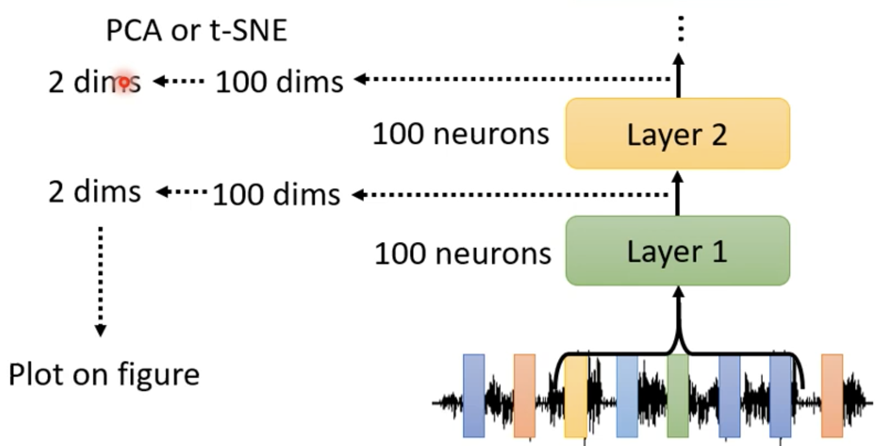
例如，将MFCC降维到二维，不同的坐标代表不同句子，颜色代表不同的speaker。画出Network第8层的输出，发现图案聚合成一条一条不同颜色的形状，这代表不同的人说同样的句子
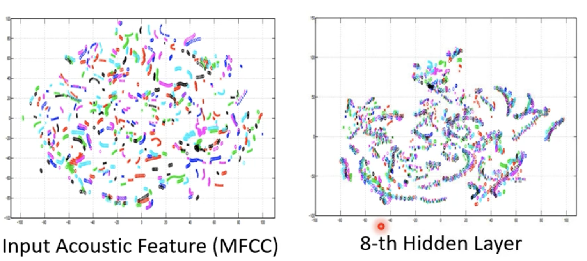
- probing 探针，插入Network中看会产生怎样的变化
比如想知道BERT的某个Layer，可以训练一个分类器探针，可以根据一个 feature 确定它是否具有词性 POS。如果正确率高，代表BERT的Embedding中含有词性的信息。也可以训练其他类型的分类器探针.但是探针的性能也会影响结论。
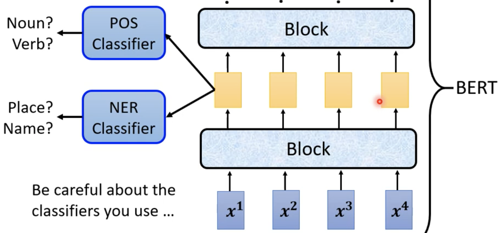
Probing 不一定是 classiifier，可以根据 Embedding 输出一段声音信号，也就是复现Network的输入，然后与输入对比，Network 抹去了哪些特征（speaker等）
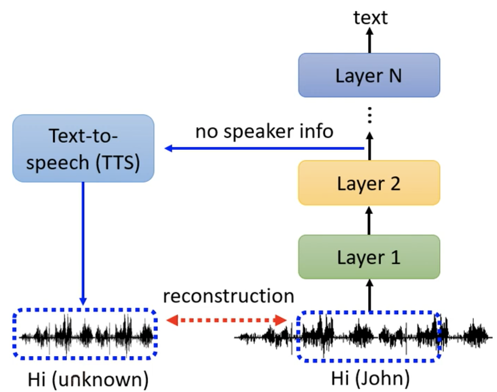
Global Explaination
对于影响分类系统，由多层 Convolution Layer 组成，每一层中包含多个 Filter，经过Filter得到的feature map 中包括许多 Large Values，表示输入图像 X 中的 patterns 可以被Filter检测到。但是 Global Explaination 不关注输入 X 本身，而是 Filter 所能Detect 的 patterns 究竟是什么样子的
所以需要 create 出一个包含 patterns 的图像 Filter 可以检测到。把 Image X 看着是 unknown variable，使得 X 经过 Filter 得到的 feature map 值越大越好
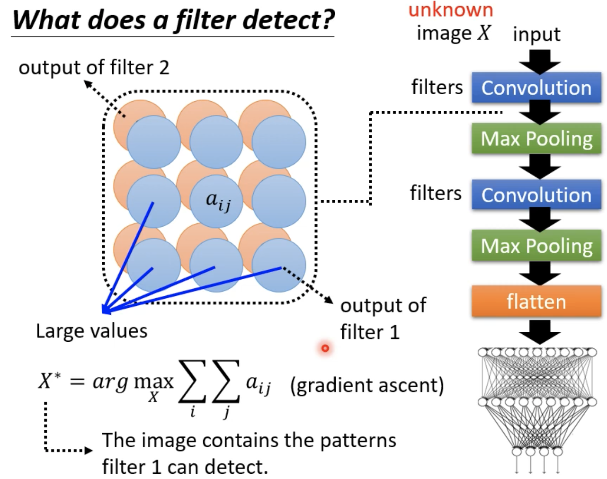
比如使用 Digit classifier，图中的第二次Layer 包含 12 个 Filter，求得 X star
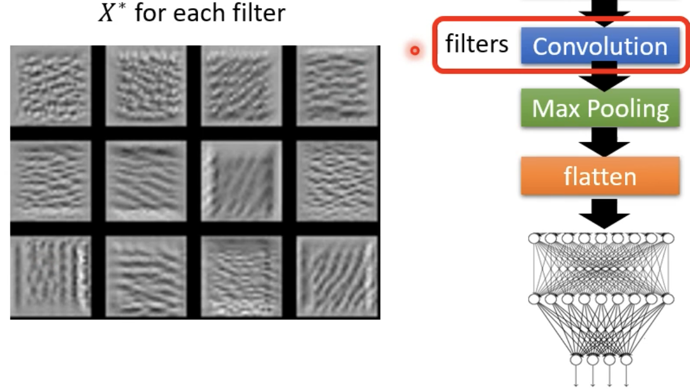
显然，不同 Filter detect 的对象不同，包括横线、斜线等。对于整个 Network 而言，我们可以找到 Image X 使得最终分类的 likelyhood 最大，实际的结果其实并不是数字，更像是 Noise，可以作为 Adversarial Attack
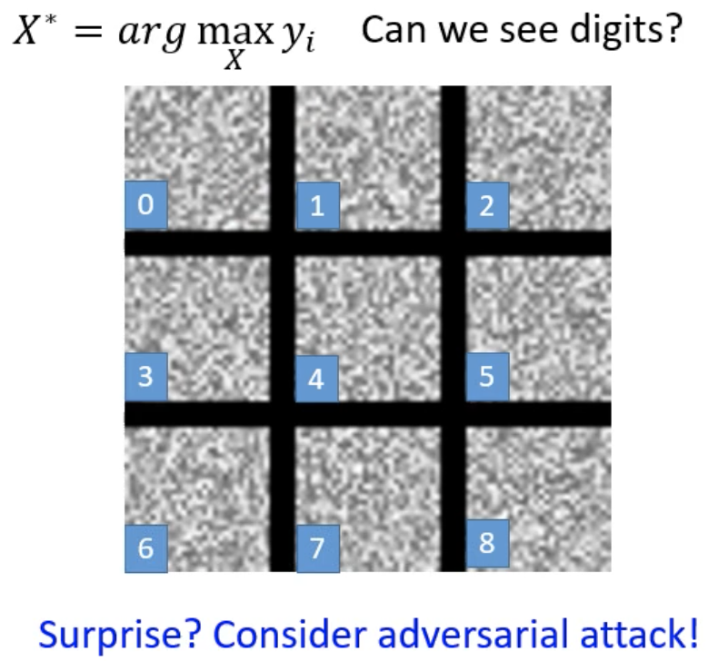
为了让 X 更像我们想要的结果，必须对这个 Optimization 添加限制 R(x)，在 optimize 的同时，使 R(X) 最大。一个数字就是笔画构成，整张图片中有颜色的地方并不多，可以让白色的点越少越好
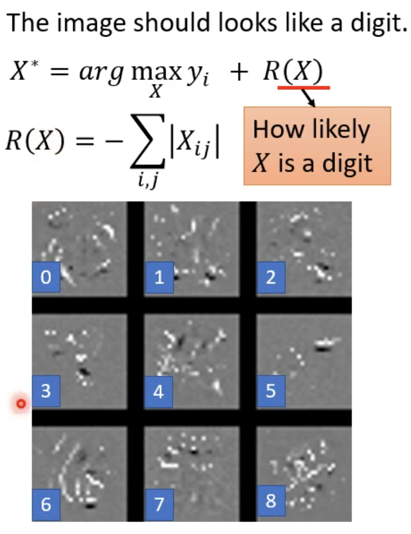
还可以使用 Generator，训练一个 Image Generator 生成 Image X，X = G(z)，z of Guassian Distribution。将 Classifier 作为 GAN 的 Discriminator 接在一起，目标就变化为找一个 z 的 Optimization 的问题
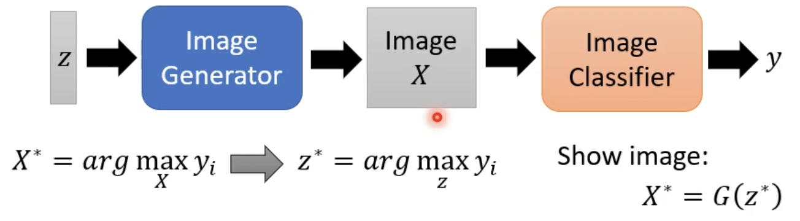
结果如下图：
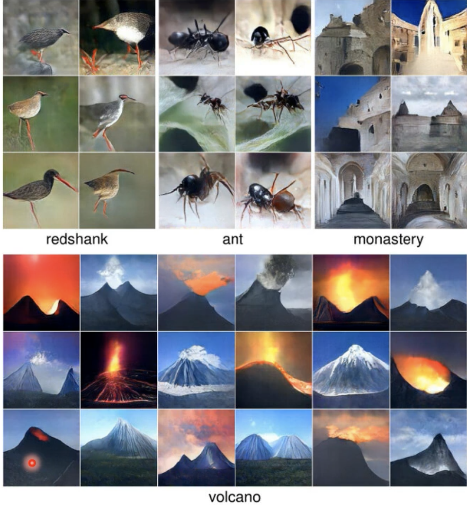
用简单的模型模仿复杂的模型，或许可以推断复杂的模型的解释
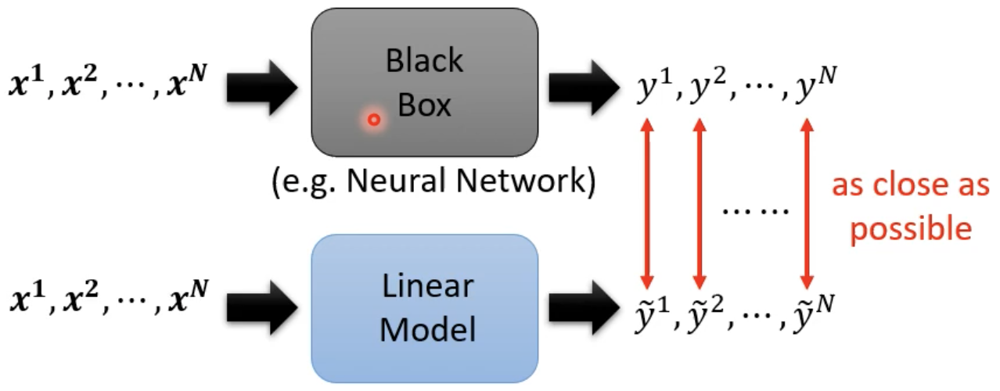
用linear model 模仿NN的局部，Local Interpretable Model-Agnostic Explainations（LIME）